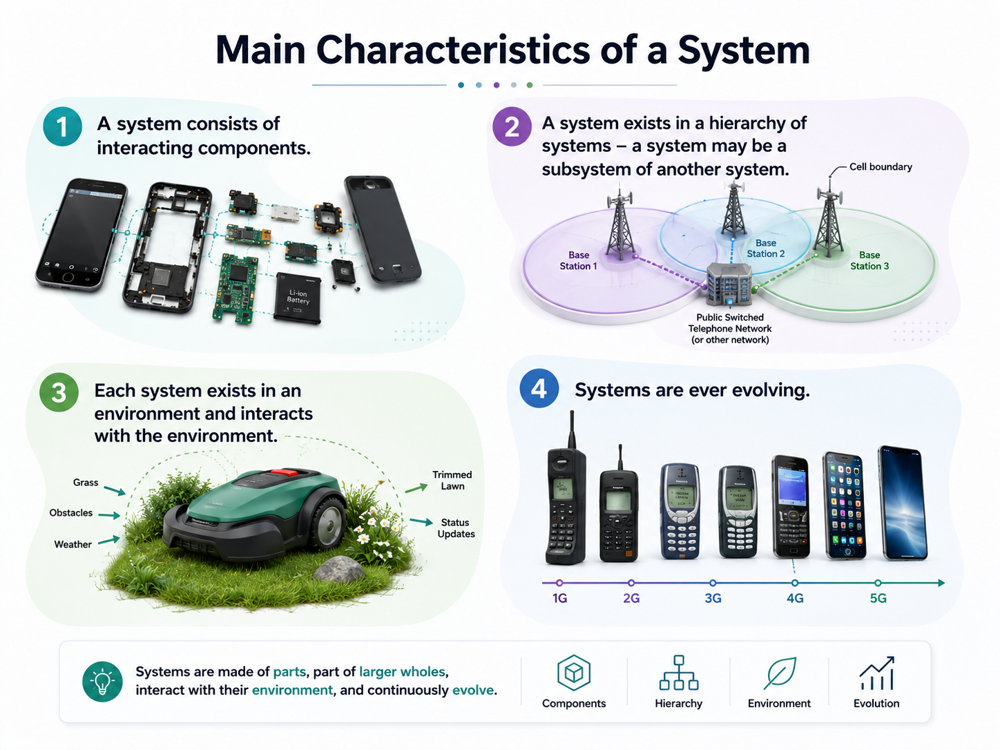

System Architectural Design
Architecture turns one large system problem into a set of understandable subsystems with explicit responsibilities and interfaces.
Explain the goals of system decomposition, identify useful subsystem boundaries, and judge an architecture by cohesion, coupling, interfaces and requirement coverage.
Where should the boundaries go?
A useful decomposition lets teams work with manageable responsibilities while preserving the behavior of the complete system. Subsystems should be cohesive internally and loosely coupled to one another, with interfaces clear enough to support parallel development and later integration.
Boundaries should enable hardware, software and human/process teams to progress without constant uncontrolled overlap.
Architecture should make it practical to adopt suitable commercial off-the-shelf components.
Subsystems collectively partition—or nearly partition—the selected system requirements.
Each subsystem needs clear functionality, inputs, outputs and dependencies.

Two useful ways to partition
e.g., check-in · transport · scanning · routing · monitoring
hardware · software · human/operational subsystem
ABHS architecture
An airport baggage system can be decomposed into check-in, conveyor/transport, security scanning, routing control, flight-information interface, monitoring, and human operations. The architecture is not merely a list: it must define how baggage and information cross subsystem boundaries.
The goal is not the fewest boxes. The goal is a decomposition with meaningful responsibilities, manageable coupling, explicit interfaces and complete requirement coverage.
Architecture creates the subsystem boundaries; allocation makes those boundaries responsible for requirements.